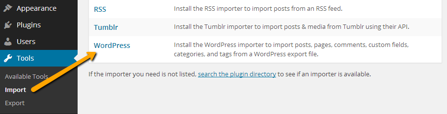
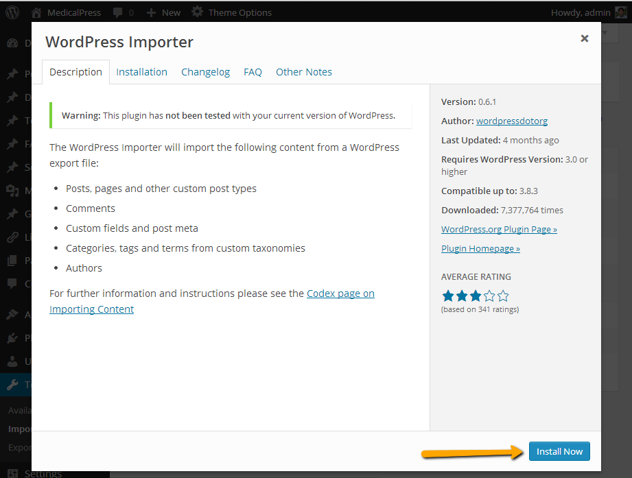
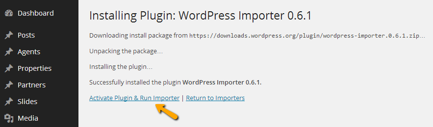
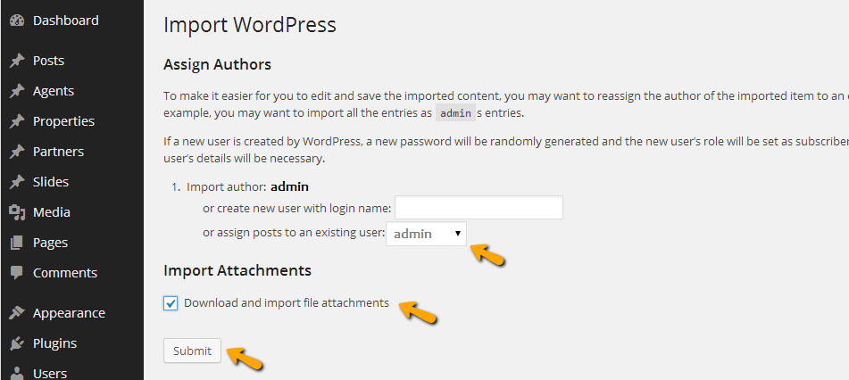
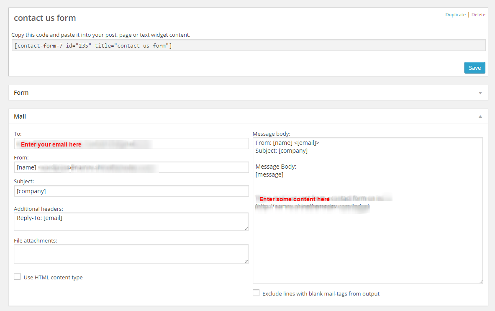
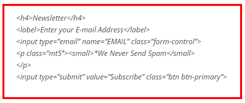

To get this theme you must have WordPress already installed. If you need help installing WordPress, follow the instructions in WordPress Codex or you can watch the Instruction Video created by Woo Themes. Below are some useful links on WordPress information:
WordPress Codex – general information about WordPress and how to install it on your server
When purchasing Traveler theme from Themeforest, you will be able to download Traveler files with your Themeforest account. There will be two packages for you to choose: The Main Files contains all files, or the Installable WordPress Theme files with just necessary installable WordPress theme files.
If you choose Main Files, there will be an Traveler Theme Folder included:
Traveler Theme Folder – contains the traveler.zip and traveler-childtheme.zip. The child theme is particularly for users who want to make code changes.
Licensing Folder - contains the licensing files. (This is not your purchase code that you need to download from Themeforest).
The Installalable WordPress Theme includes only the traveler.zip file
traveler.zip - this is the parent wordpress theme. We recommend you install it via WordPress panel. If you install it via FTP, you have to unzip it and use the extracted folder.
1.3. Free Forum Support
All of our products come with free support via our dedicated Support Forum . Support is available in every questions regarding theme’s features or problems with the theme. (We will not work with your code customizations or third-party plugins. If you need help in these problems, please contact with a developer to solve them).
Step 2 – Enter your Themeforest Purchase Code, e-mail and a password. Your forum's username is assigned to be the same with your Themeforest purchased username.
Step 3 – Sign into the forum with your new created account and start using it.
We presented the guides below assumed that you have WordPress already installed. (If you haven't,
go there for WordPress installation guide).
The Traveler theme can be installed by two methods: through WordPress, or via FTP. Check the Installation Via WordPress and Installation via FTP sections for each method. Our Tutorial Videos will also give a clearer instruction for you on these two.
2.1. Installation via WordPress
Follow the steps below to install Traveler via WordPress.
Step 1 - Unzip the downloaded package from Themeforest. Find the folder theme and inside it find the file traveler.zip
Step 2 - Login to your WordPress dashboard, go to Appearance > Themes click Install Themes tab and select Upload
Step 3 - Click the Browse button and find the file "traveler.zip" on your computer.Click "Install"
Step 4 - Wait the theme being uploaded and installed.
Step 5 - Activate the theme: Go to Appearance > Themes and Activate.
Common Install Error: Are You Sure You Want To Do This?
The “Are You Sure You Want To Do This” message may occur, means that you are limited in upload file size. Consider install the theme via FTP if this happens, or call your hosting company and ask them to increase the limited size.
Follow the steps below to install Traveler via FTP.
Step 1 – Log into your hosting space via an FTP software
Step 2 – Unzip the traveler.zip file and ONLY use the extracted Traveler theme folder
Step 3 – Upload the extracted Traveler theme folder into wp-content > themes folder
Step 4 – Activate the theme: Go to Appearance > Themes and Activate.
Step 5 – You will get a notification to activate the required plugins. See below.
Transfer type
You should transfer text files like PHP files via ASCII transfer type, and for other types of files such as images, you should use binary transfer type. Otherwise you can get errors.
You can update your theme via FTP or via WordPress admin panel. However, make sure that you have already downloaded the new updated theme files from Themeforest first.
Important Update Infomation
Each update version comes with new amazing features and we will try our best to brings them immediately to you. Below are some things you need to prepare before update.
- Backup Your Current Theme – It’s always a good idea to keep a backup of your current theme. Log on to your server or cpanel and make a copy of your current "Traveler" theme folder to your computer. If needed, you can reload the previous version. Its also a good idea to backup your theme options. There is a “Backup” tab in theme options to export your settings. And always be sure to make a copy of your custom CSS field and tracking code.
- Do Not Keep Older Copies of The Theme In WP Theme Folder – You should completely remove all previous Traveler theme folders before adding the new updated theme folder, or you could end up with WP path issues, etc.
- Do Not Rename The Theme Folder – If you rename your theme folder when you update, the path will no longer be valid. WordPress stores menus, widget settings and some other settings by folder path. You need to rename your theme folder back to the original state as while it first be downloaded, and your settings, menus, widgets will be restored. If you need to keep your previous theme folder, then simply make a copy of it some elsewhere before you upload the new theme
- Reset Browser Cache - It is always recommended to reset your browser, plugins, server cache when you update. Visual issues may happen, and cache needs emptied. Each browser allows you to remove cookies, history and other data.
- New Visual Composer - When update versions comes with new version of Visual Composer, you should delete old-version and re-install it again.
3.Import XML for Demo Contents
When any Wordpress theme first being installed, it will not contain all the extra content that you might seen in the live demo.
There are two ways you can import WaveX Demo Content. Usually you have to import an XML file which can be troublesome. We 've made it easier by creating a One Click Demo Content Importer.
Import All Demo Content – Now users can quickly and easily import our demo content with one click of the button. This is the preferred method because it 's the fastest and easiest way to get our demo content. Using this method will give you all our pages and posts, several sample sliders of each slider type, widgets, theme options setting, etc.. If you wish to use our One Click Demo Content Importer, please see the “How To Import All Demo Content” section in our documentation.
3.1 Import by our One Click Install Tool
( We recommended for Save Time for you )
After install and activate all plugin that we recommend you, please navigate to Traveler Settings > Importer Content Click in import demo content
3.2 Import by hand
( If you have problem with One Click Install above )
Import data XML
Look for Import XML folder in unzipped package downloaded from themeforest and use the XML within it.
Go to the WordPress Admin > Tools > Import and click WordPress as displayed in image below.

At 1st time you need to install WordPress importer plugin

Once installed you need to activate the plugin and run the importer.

Select the XML file from Import XML folder in unzipped package that you have downloaded from themeforest.
There are 14 files XML
activity.xml
car.xml
contact.xml
hotel.xml
layout.xml
location.xml
order.xml
page.xml
post.xml
rental.xml
room.xml
rztour.xml
stmenu.xml
media.xml
After importing XML file.
Assign posts to an existing author.
Mark the checkbox to download and import file attachments
Click 'Submit' button

Import process can take few minutes. So wait for it and try to keep the focus on current tab in your browser.
After that is done, you will have bunch of posts, pages, properties and other contents as on the theme demo.
Notice: – Our demo images will not be included because those are licensed stock photos which are not allowed to be shared. Instead we will replace by default images
4. Theme Options
You can edit and control Traveler Theme settings through the powerful Theme Options panel. Easy to edit without concern to any single code line.
Go to your admin Dashboard, navigate to Theme Options.
4.1. General Options
Enable Nice Scroll Turn on/off the the Smooth page-scrolling effect
Favicon Upload favicon logo for the website. It will shown in page's tab title.
Logo Upload your brand's logo
Logo Retina Upload the logo to be showed on retina devices. Enter the tail "@2x" after the logo's name to ensure logo shown in good quality.
Seo Options Enable/Disable SEO options. Included SEO Title, SEO Description and SEO Keyword.
Page for Footer Choose a custom page to be theme's footer.
***To create Footer page: In Dashboard, go to Pages > Add New , create your Footer page wth Visual Composer. See more at section Footer Page below.
Booking Enable Captcha:turn on to booking with modal
Card Accepted inform what Cards are accepted in booking (Master Card, American Express, VISA,...). Click Add New, then add Card's title and upload Card's logo
Currency List inform what currencies can be used in booking (USD, Euro, Pound,...). Click Add New, then add Currency's title, name, its symbol and exchange rate.
Primary Currency : Set the primary currency being used in your website.
Currency decimal: Set the position of currency symbol ($100 or 100 $)
Allow Booking functions for: Select what services (Hotel/Cars/Rental/Activity/Tour) have booking functions (included search tab, book and order).
Paypal Email: enter your Payal Email Account
Paypal Enable Sandbox: Allow you to enable sandbox mod for testing
Paypal API Username: enter your Paypal API Username
To create sidebar with widgets, follow the steps below:
Step 1 : Navigate to "Appearance > Widgets"
Step 2 : In left side is the provided available widgets, and in right side are your sidebars. Simply drag and drop your selected widgets
from the left side into the right side in the sidebar you want.
Probbaly the most crucial features of this theme are Traveler services such as Hotel, Rooms, Rentals, Cars, Tours, Activities,... so the services providers may advertise their services and visitors to the website can make reservations. Current version of Traveler provide the above services (other services, such as Cruises, are on the go in the future). You may use all of them, or choose the most suitable services that you work on.
Shinetheme team has made available various layouts for each Services below, in terms of Detail pages, Search pages, and Results pages. You can check the Layouts sections in Dashboard to learn more about it.
6.1. Hotels
Hotels in Traveler may be set among 4 Detail-Layouts, 3 Search-Layouts, and 5 Results-Layout
Attribute of Hotel, Rental, Car, Tour, Activity... maybe create in Traveler Setting > Attributes section in Dashboard, then be added in each creating of services. s
For example:
Create Attribute:
(You can add attributes for the Attribute. For example: Hotel Attribute1 belongs to Hotel Attribute.)
7. Pages
Pages are probably among the the most important contents in a site. You can create as many pages as you want, in different templates and styles, such as homepage, normal page (default), footer page, blog page,... Visual Composer is also a power tool in building multifunction sections in your pages.
7.1 Visual Composer
Visual Composer for WordPress is a drag and drop frontend and backend page builder plugin that will save you tons of time working on the site content. You will be able to take full control over your WordPress site, build any layout you can imagine – no programming knowledge required. Moreover, now you can choose either work on a backend or move your page building process to frontend and instantly see changes you make.
Learn more about Visual Composer
7.2 How to create Home pages
A Homepage may included various sections: Banner, Menu, Sections,... In Traveler, it may also included Search Fields Box, Last Minute Deal, Top Destinations,...
Current version of Traveler have 8 variants of Homepage:
To help customers control the website, Traveler have intergrated serveral functions pages there. Most crucially are: User Profile pages (included: Settings, Booking, Wishlist), Blog, Login/Register, Comming soon,... pages.
To save your time, Shinetheme team have create default template for these pages, and you just need to choose the template instead of wasting time to build each elements in Visual Composer.
Step 2: Use Element of VisualComposer to build Footer content
Step 3: navigate to Appearance > ThemeOptions > General Settings> Page for Footer, then choose the page you created to set Footer
7.5 How to setup Contact-form
Step 1: Make sure you have installed the Contact Form 7 plugin (which should be done in the installation of the theme).
Step 2: Navigate to the "Contact" option on the main dashboard menu, click "All" then Edit one contact form, or select "Add New"
Step 3: Edit the form fields, your contact email, and customize any of your auto messages. Save the form and then use the shortcode provided in the brown bar at the top to insert your contact form wherever you want it. Remember to enter your email replaced the test@gmail.com so you can receive the messages.

7.6 How to setup Mail chimp
Mailchimp is an email marketing service provider. It is included in Footer, standing second from the left to the right.
To create Mailchimp, please follow the instruction below: Step 1 - Navigate to Mailchimp for Wp -> Forms -> Form Mark-up Step 2 - In Form Mark-up, copy this code below in it

8. Translations
8.1. WPML
The theme may be configure to be a multilingual site. You can visit WPML site learn more WPML.
After that the WPML wizard will guide you to properly configure the multilingual site.
For reference: the widgets and theme options can be only translated using the String Translation.
8.2. Manual translation
All our WordPress themes are translation-ready which means that you can easily translate them to any language you want. Here are some instructions:
First, change your entire language of WP installation to your language. This can be done in file wp-config.php in the root of your WP installation.
WordPress doesn't include the WPLANG constant in wp-config.php file since WP 4.0. Anyway, just to switch the language you can add it manually.
Find a line define('WP_DEBUG', false); and add this line right below it: define('WPLANG', '<your locale code here>');
Second, navigate to the folder of the theme (wp-content/themes/<traveler>/) and in the folder languages/ (of the theme) you will find file <name of the theme>.pot. Load this file (as the catalog) in the PoEdit and start translating. When done, save the .po file in the folder translations (there are en_EN.po and en_EN.mo files already there as an example) and name it the same as the defined WPLANG constant in the file wp-config.php. .mo file will be automatically created next to the .po file.
This is example of translating:
If is you feel this method too complex, you can always use CODESTYLING LOCALIZATION PLUGIN, which helps you with a quick and smooth translation. This plugin is completely free and very easy to use it.
9. Extras
9.1. Demo Images
All the images shown in the demo page of Shinetheme are copyrighted and come blurry with the theme (demo content).
9.2. Make your site run faster
Get a good hostingYou may not think that this is important, but if you want your site to display really fast you need to get a good hosting. This is the first step in having a fast site, which also translates into more views, which also translates into a better SEO, which finally translates into more sales.
Optimize images
Always optimize/compress your jpeg images before uploading them to the server. Large images should be compressed at around 90% image quality and you should also try to limit the use of lossless image files (uncompressed pngs)
Use a caching plugin
We can’t recommend enough the necessitiy go good caching. If you use a managed hosting such as WPEngine you don’t need this. But if you are using ASO or MT or any other hosting you need to cache your content. For this purpose, we recommend W3 Total Cache! It’s a great and easy to use plugin, and with only a bit of work you can double your site’s speed.
9.3. Child theme
1. About Child theme
A child theme is a theme that inherits the functionality and styling of another theme called parent theme. Child themes are the recommended way of modifying an existing theme without causing any changes in parent theme’s code as well as losing any modifications.
A child theme is recommended to use as the following reasons:
Using a child theme ensures your modifications to be preserved when the parent theme is updated.
Using a child theme can save you more time.
2. How to activate Child theme in Traveler
The child theme of Traveler enclosed in Traveler package is called Traveler-Childtheme.
To activate the child theme:
Step 1 - Go to Dashboard -> Appearance -> Themes -> Add new theme -> Upload Traveler-Childtheme. Wait for a second.
Step 2 - Click Activate the theme.
For example, if you want to modify custom.css without making changes in Traveler code and being lost when updating, copy and paste custom.css in Traveler-Childtheme.
Step 1 - In Traveler-Childtheme folder, create a new folder named Css.
Step 2 - Copy custom.cssfrom Css folder of the parent theme then paste it in Css folder of the child theme. Now you can modify any parts.


 A child theme is recommended to use as the following reasons:
A child theme is recommended to use as the following reasons:


{kind=link}
{kind=link}
{kind=link}
{kind=link}
{kind=link}
{kind=link}
{kind=link}
{kind=link}
{kind=link}
{kind=link}
{kind=link}
{kind=link}
{kind=link}
{kind=link}
{kind=link}